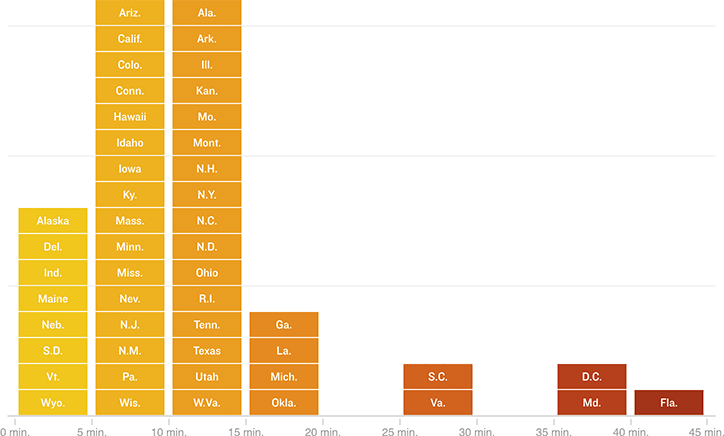

On Average, Florida Voters Waited Longest To Vote In 2012
Within a given state, waiting times could vary greatly by location and time of day. Voters in most states waited, on average, less than 20 minutes to vote in person in 2012. However, voters in Florida, Maryland, South Carolina, Virginia and the District of Columbia waited, on average, 25 minutes or more.
